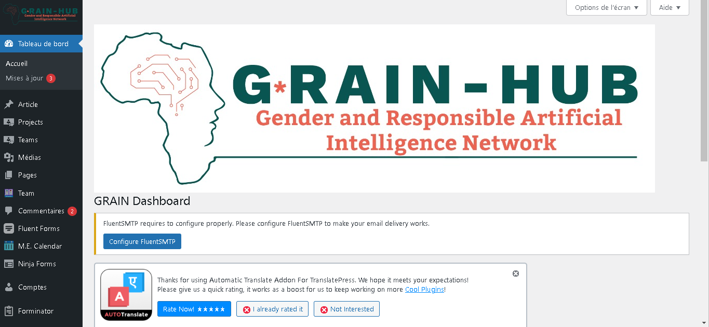
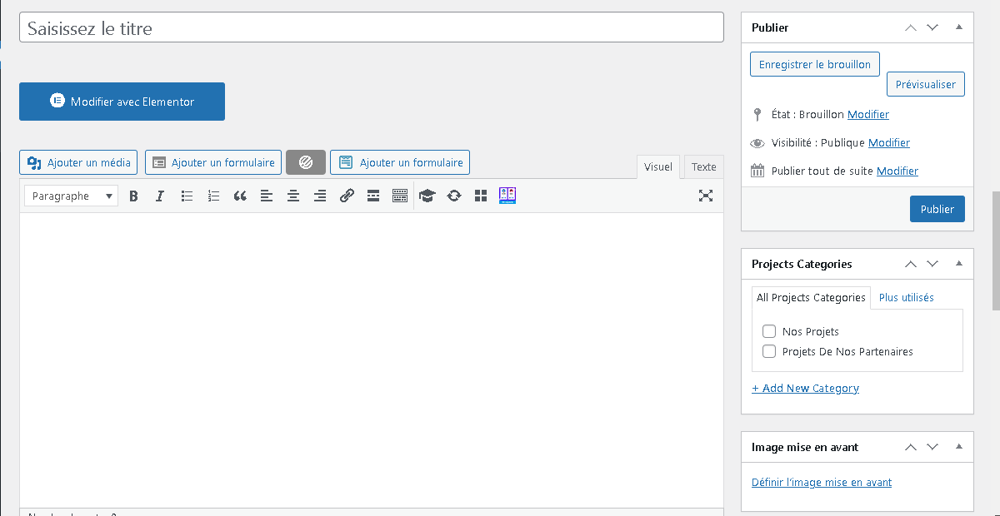
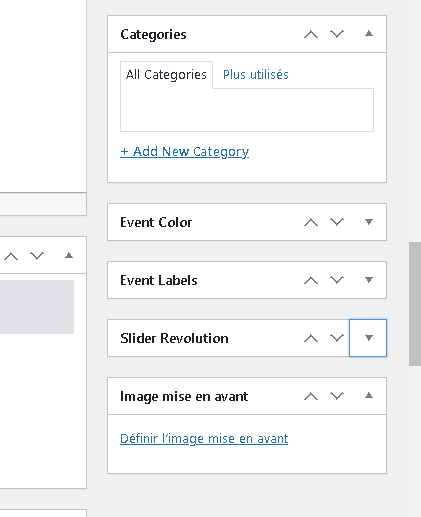
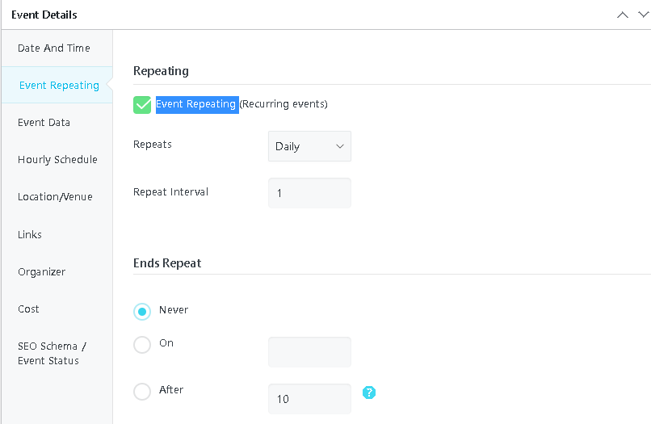
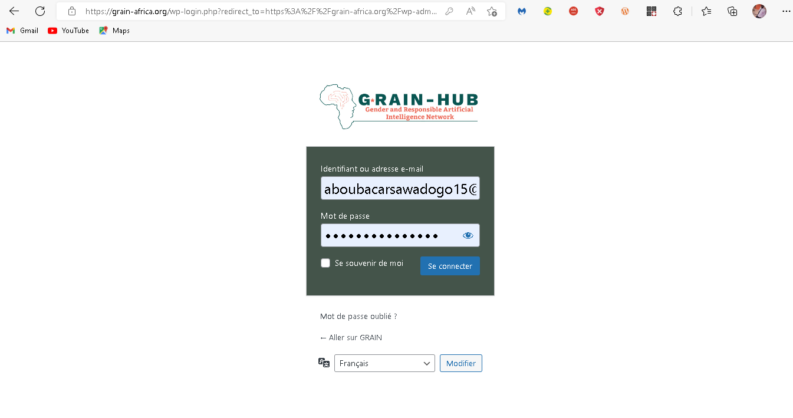

- Evenement
- Mediatheque
- Langage Switcher
-
@ 2022 Copyright Conçu par Monark-group.
-
Début
Creer Une Publication
Etape 1 - Connectez - vous à votre panneau d’administration WordPress (tableau de bord).
Etape 2 - Cliquez sur l’onglet
'« Articles dans le paneau d'administration ».
Etape 3 - Cliquez sur le sous-onglet 'Add
« Ajouter nouveau »(New)' .

Etape 4 - Commencez à remplir les blancs: entrez le titre de votre publication dans le champ supérieur et entrez le contenu du corps de votre message dans la boîte d’édition principale en dessous.
Etape 5 - Si nécessaire, sélectionnez une catégorie de publication.
Etape 6 - Téléchargez une image mise en avant( en vedette) pour votre publication.
{kind=link}
Etape 8 - Cliquez sur modifier avec le bouton Elementor pour modifier le contenu.
Etape 1 - Connectez - vous à votre panneau d’administration WordPress (tableau de bord).
Etape 2 - Cliquez sur l’onglet
Project dans la barre d'administration.
Etape 3 - Cliquez sur le sous-onglet 'Add New' .
Etape 4 - Commencez à remplir les blancs: entrez le titre de votre publication dans le champ supérieur et entrez le contenu du corps de votre message dans la boîte d’édition principale en dessous.

Etape 5 - Si nécessaire, sélectionnez une catégorie de publication.
Etape 6 - Téléchargez une image mise en avant( en vedette) pour votre publication.
Etape 7 - selectionner le modèle de la page (elementor pleine largeur).
Etape 8 - Une fois terminé, publiez le projet. Etape 9 - Cliquez sur modifier avec le bouton Elementor pour modifier et mieux designer le contenu.
Etape 1 - Connectez - vous à Votre panneau d’administration WordPress (tableau de bord).
Etape 2- Cliquer sur
M.E. Calendar > Add Event dans le paneau d'administration.
Etape 3 - Commencez à remplir les blancs: entrez le titre de votre publication dans le champ supérieur et entrez les details de votre événement dans la boîte d’édition principale en dessous.
Etape 4 - Si nécessaire, sélectionnez ou créer une nouvelle catégorie d'événement Dans la petite fenetre à droite.

Etape 5 - Téléchargez une image mise en avant( en vedette) pour événement Dans la petite fenetre à droite.
Etape 6 - Cocher, All-day Events.
Etape 7 - Renseignez, la date et l'heure.
Etape 8 - Si C'est un événemet récurent(qui se répète), Cliquez sur l'onglet Event Repeating, Cocher Event Repeating puis renseigner les informations de récurence.

Etape 1 - Connectez - vous à Votre panneau d’administration WordPress (tableau de bord).

Etape 2- Cliquer sur
Fluent Forms > Entrées.

Etape 1 - Connectez - vous à Votre panneau d’administration WordPress (tableau de bord).
Etape 2- Cliquer sur
Comptes > Ajouter.
Etape 3- Remplir les différents
Comptes > Champs.
-
MEDIATHEQUE
GENERAL(Click pour ouvrir)
- Cliquer sur l'icone crayon pour acceder au panneau de modification
- -ajouter nouveau podcast cliquer sur ajouter element.
- -cliquer sur l'icone Croix pour supprimer
- Cliquer sur ajouter élement pour rajouter une vidéo
Svp Connecter vous en tant que Admin Pour chaque Modifications GRAIN
Etape 1 - Après Connexion En tant que Admin Ouvrir Page image ->
Ouvrir Modification avec Elementor-> Ajouter et Modifier L'image
{kind=link}
Etape 2 - Bienvenue sur la Page image avec
Editeur de modification Elementor.
{kind=link}
Etape 3 - Cliquer sur l'icone Crayon
Pour Modifier.
{kind=link}
Etape 4 - Possibilité d'ajouter modifier
Supprimmerà la galerie. Après modification appuyer sur le boutton inserer à la galerie
{kind=link}
Etape 5 - Dernière Mettre à jour la page après chaque modification Pour eviter toutes pertes.
{kind=link}
Svp Connecter vous en tant que Admin Pour chaque Modifications GRAIN
Etape 1 - Après Connexion En tant que Admin Ouvrir Page Podcast ->
Ouvrir Modification avec Elementor-> Ajouter et Modifier Podcast
{kind=link}
Etape 2 - Bienvenue sur la Page Podcast avec Editeur de modification Elementor.
{kind=link}
Etape 3 - Derouler Liste de Lecture Pour Changer titre du podcast et ajouter un son.
{kind=link}
Etape 4 - Derouler Liste de Diaporama
Pour d'ajouter modifier ou
Supprimmerl'image mise en avant
{kind=link}
Etape 5 - Derouler details album
{kind=link}
Etape 5 - Dernière Mettre à jour la page après chaque modification Pour eviter toutes pertes.
Svp Connecter vous en tant que Admin Pour chaque Modifications GRAIN
Etape 1 - Après Connexion En tant que Admin Ouvrir Page Video ->
Ouvrir Modification avec Elementor-> Ajouter et Modifier tes Videos
{kind=link}
Etape 2 - Cliquer sur l'icone Crayon Pour Modifier

Etape 3 - modifier
Titre de la vidéo et modifier video
{kind=link}
Etape 4 - Dernière Mettre à jour la page après chaque modification Pour eviter toutes pertes.
-
Français-Anglais
Traduire manuellement
Etape 1 Connectez vous en mode administrateur
Etape 2 - cliquer sur le boutton Traduire la page
Etape 3 - Cliquer Sur la video pour la suite.